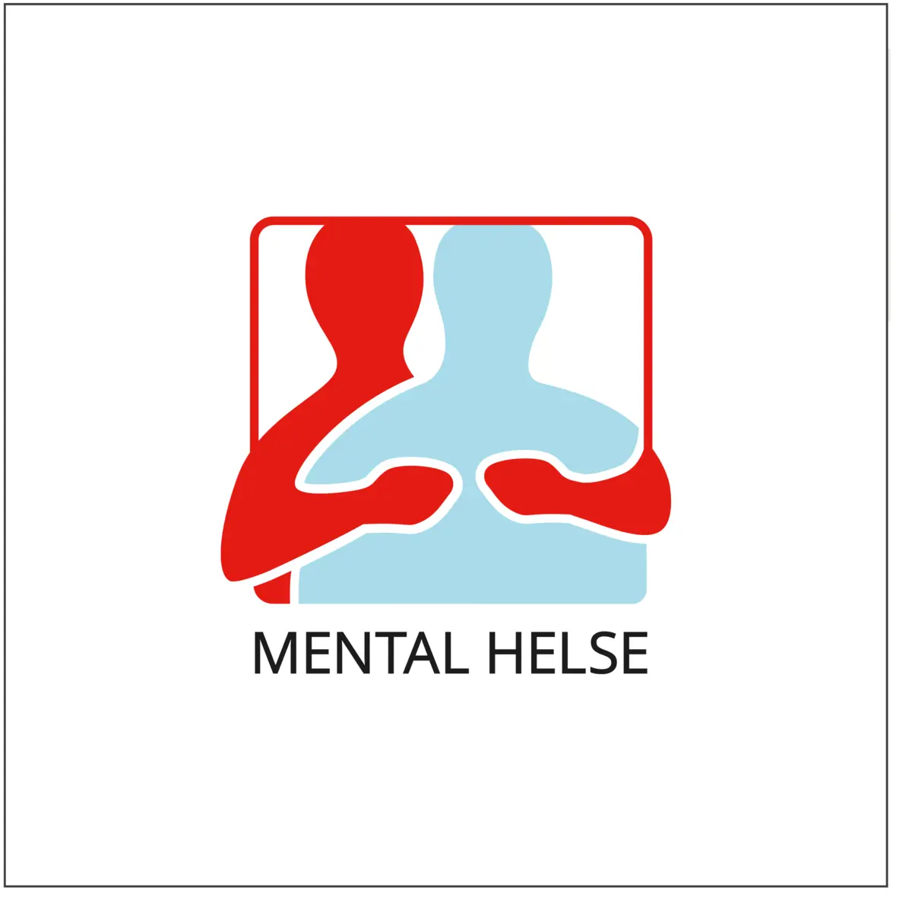

World Mental Health Day: October 10, 2024
Theme: Mental Health at Work
Hashtag: #WorldMentalHealthDay
World Mental Health Day is coming up on October 10! It’s a day celebrated in over 150 countries to spread awareness about mental health. In Norway, we kick off a national public health campaign that runs from weeks 39 to 42 each year. During this time, schools, workplaces, and organizations come together to promote understanding and openness about mental health.
This year, the World Health Organization (WHO) is teaming up with partners to highlight the important link between mental health and work. Safe and healthy work environments can protect our mental well-being. On the flip side, unhealthy conditions—like stigma, discrimination, and harassment—can really take a toll on our mental health and overall quality of life. With 60% of people around the world in jobs, it’s crucial that we take action to create workplaces that support mental health.
To improve mental health at work, everyone needs to work together—governments, employers, worker organizations, and others. It's important to include the voices of workers and those who have experienced mental health issues. By focusing on proven strategies and interventions, we can help create environments where everyone can thrive at work and in life.
Join us this World Mental Health Day!
Learn More About The Mental Health Day
Get Involved in Awareness Activities in Norway
Together, we can make a real difference for mental health at work.
Key Messages
- Mental Health and Work: Mental health is closely tied to work. A supportive workplace promotes mental well-being, while poor conditions can harm it, leading to lower job satisfaction and productivity.
- Risks to Workers: Workers face various mental health risks, such as discrimination and inadequate working conditions. Low-paid or insecure jobs often leave workers more vulnerable to these risks.
- Impact on Individuals: Insufficient support for those with mental health conditions can harm their confidence, job satisfaction, and ability to work. Family members and caregivers are also affected.
- Wider Societal Impact: Poor mental health results in decreased performance and higher absenteeism. Depression and anxiety alone cause about 12 billion workdays lost each year.
- Stigma and Employment: Stigma and discrimination can prevent individuals with mental health conditions from seeking help or maintaining employment. Reducing discrimination through awareness and training can create healthier work environments.
- Supporting Workers: Employers should make reasonable accommodations for workers with mental health conditions, such as regular check-ins and flexible schedules.
- Manager Training: Employers should train managers to recognize stressors and support their teams effectively, fostering a healthier workplace
- Government Collaboration: Governments, employers, and worker organizations must collaborate to create policies that promote well-being and prioritize mental health
- Self-Care: While it's essential for employers and governments to promote mental health, individuals can also take steps to care for their own well-being. Learn stress management techniques and seek support from trusted sources when needed.
Main Events in Gjøvik
Event 1: Open Event
Date: October 10
Time: 08:00 - 16:00
Location: Teknologivegen, Gjøvik, Norway
Hosted by: Sit Gjøvik v/SATS Innlandet
https://www.verdensdagen.no/markeringer/apent-arrangement
Join us for an open event focusing on mental health awareness and support.
Event 2: Rockovery
Date: October 3
Time: 18:00 - 22:00
Location: Gjøvik Kino & Scene, Elvegata, Gjøvik, Norway
Hosted by: Mental Helse Toten
Region: Innlandet
https://www.verdensdagen.no/markeringer/rockovery-vmental-helse-toten
Join us for Rockovery, an event organized by Mental Helse Toten, featuring music and activities aimed at raising awareness for mental health.
Event 3: World Mental Health Day at NTNU
Date: October 10
Time: 08:00 - 16:00
Location: NTNU
Regions: Innlandet, Møre og Romsdal, Trøndelag
https://www.verdensdagen.no/markeringer/verdensdagen-for-psyksisk-helse-2024-pa-ntnu
Celebrate World Mental Health Day with various activities and discussions at NTNU.